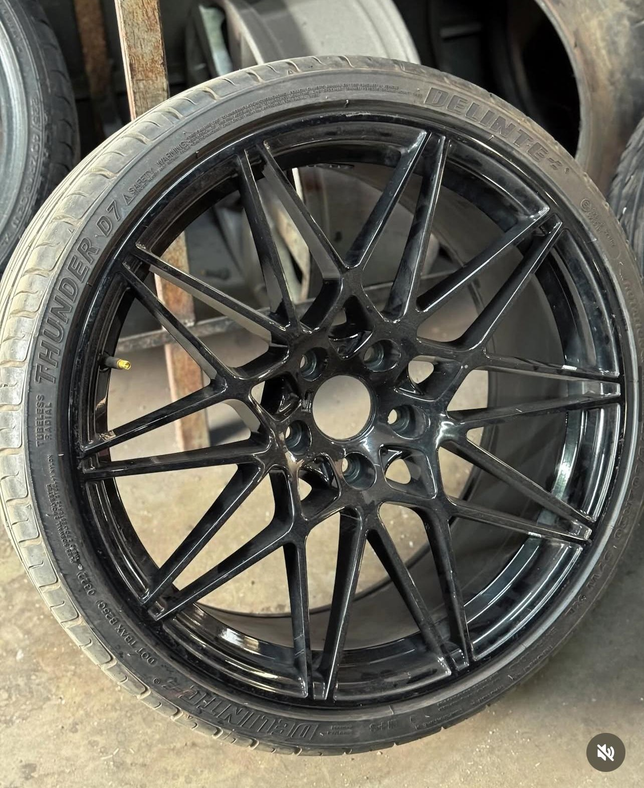
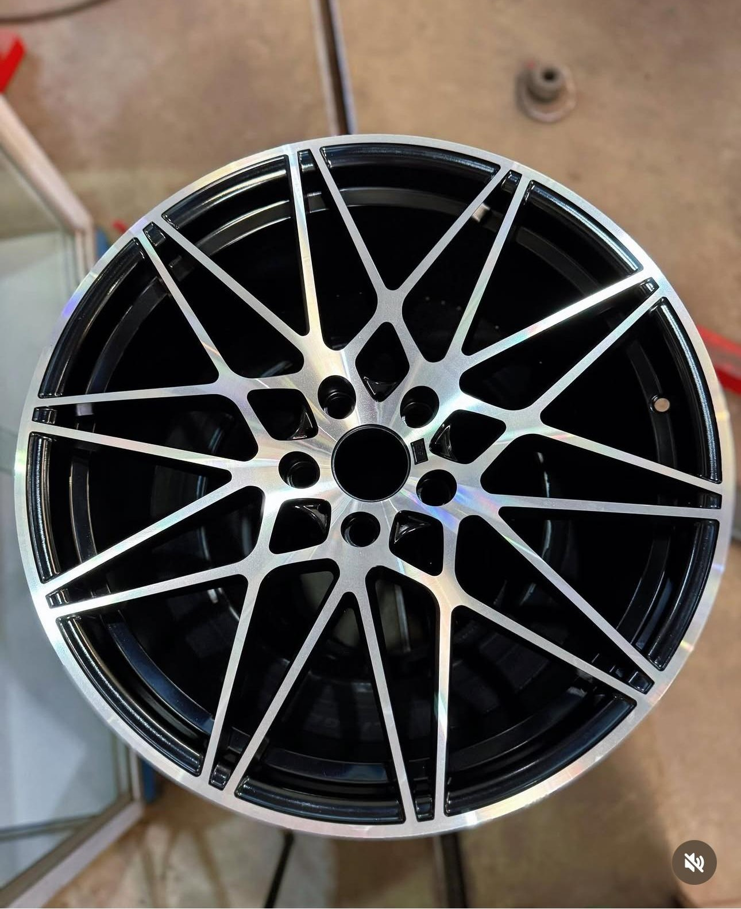
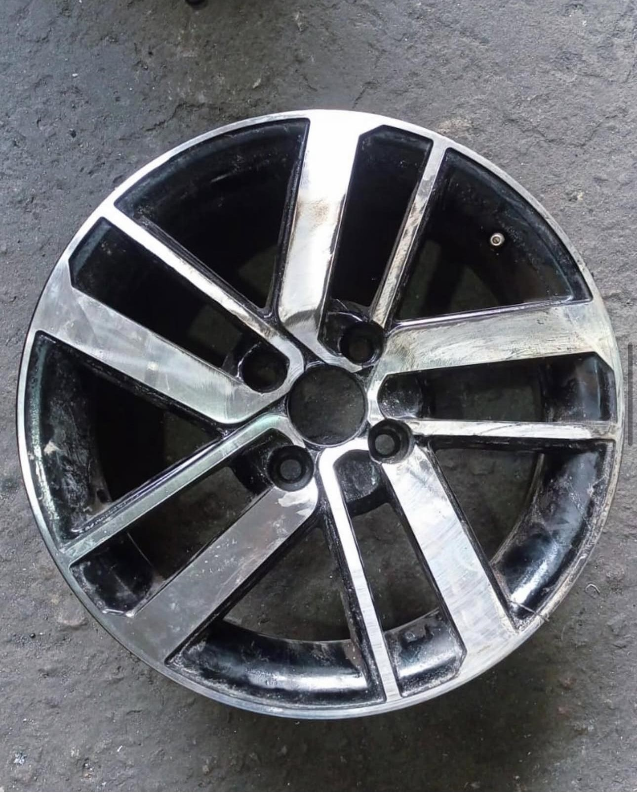
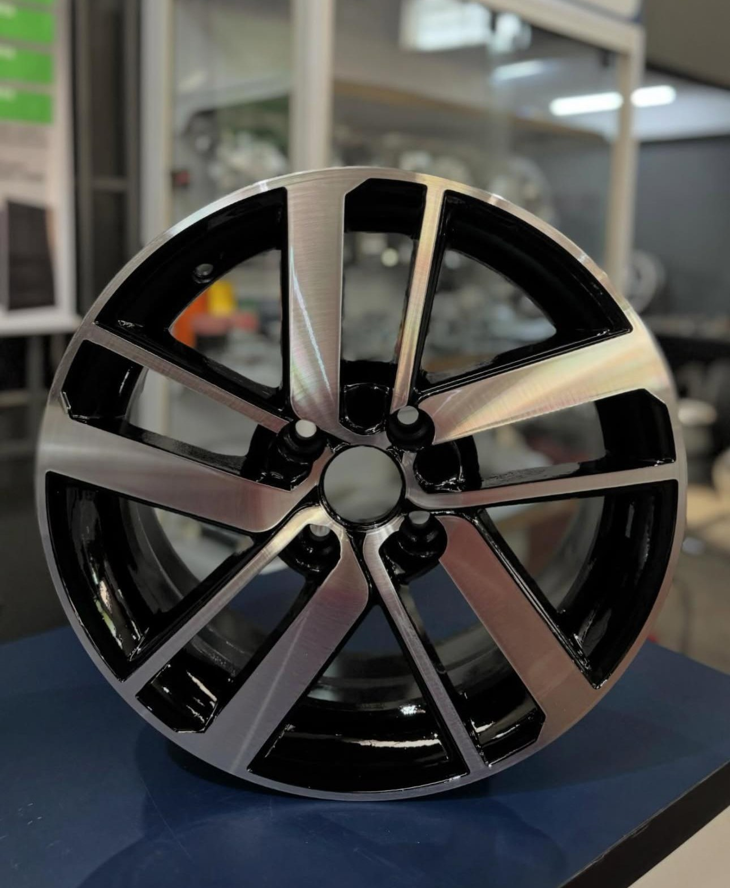
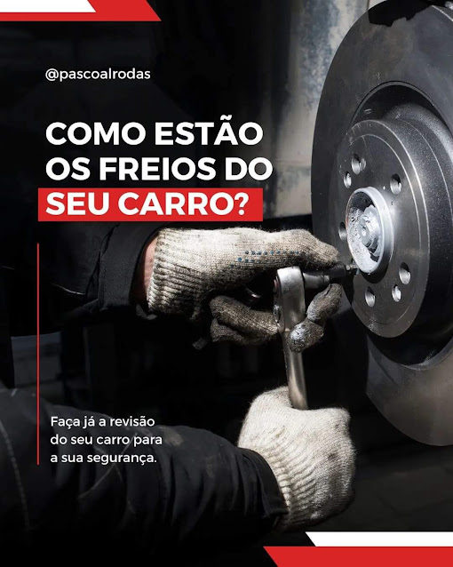

Recuperação de Rodas
Rodas amassadas, tortas ou riscadas? Restauramos rodas de carro e moto ao desempenho e à aparência originais.
Solicitar orçamentoRecuperamos suas rodas e cuidamos do seu veículo com equipamentos de última geração, preço justo e garantia de qualidade. Sua segurança em primeiro lugar.
Soluções completas para as rodas e a manutenção do seu veículo, de carros a motos.
Rodas amassadas, tortas ou riscadas? Restauramos rodas de carro e moto ao desempenho e à aparência originais.
Solicitar orçamentoAlinhamento preciso com equipamentos de última geração. Evita desgaste irregular dos pneus e melhora o consumo.
Solicitar orçamentoElimina vibrações no volante e prolonga a vida útil dos pneus e da suspensão. Direção mais suave e segura.
Solicitar orçamentoAmpla seleção de pneus das melhores marcas para todos os veículos. Ajudamos você a escolher o pneu ideal.
Solicitar orçamentoMantenha o motor do seu carro sempre em dia com óleos e filtros de qualidade. Previna problemas futuros.
Solicitar orçamentoReparos e manutenções confiáveis e duradouros nos principais sistemas de segurança do seu veículo.
Solicitar orçamentoConfira alguns dos trabalhos realizados em nossa oficina. Clique nas imagens para ampliar.





A Pascoal Rodas é uma oficina especializada em serviços de rodas, alinhamento e balanceamento em Várzea Grande - MT. Há mais de 10 anos, nossa missão é oferecer serviços rápidos, eficazes e com qualidade garantida para a segurança dos nossos clientes.
Contamos com técnicos altamente qualificados e equipamentos de alta precisão para restaurar suas rodas e manter seu veículo em perfeitas condições — do reparo à manutenção preventiva.
Oferecer serviços automotivos de excelência, com qualidade, segurança e satisfação dos nossos clientes.
Ser reconhecida como a mecânica de referência, com atendimento diferenciado e a melhor qualidade.
Compromisso com a qualidade, transparência e ética, e responsabilidade com o meio ambiente.
Na maioria dos casos, sim. A recuperação custa bem menos que uma roda nova e, feita com equipamentos adequados, devolve o desempenho e a aparência originais com total segurança.
O recomendado é a cada 10.000 km, na troca de pneus ou sempre que notar o volante puxando para um lado ou vibrando. A manutenção preventiva evita desgaste irregular e economiza combustível.
Você pode nos visitar diretamente, mas recomendamos chamar no WhatsApp antes para garantir um atendimento mais rápido e já receber uma estimativa do serviço.
Sim. Todos os nossos serviços são realizados com os mais altos padrões de qualidade e possuem garantia. Sua segurança é nossa prioridade.
Preencha o formulário e receba o orçamento diretamente no seu WhatsApp, sem compromisso.
Av. Alzira Santana, 123 - Jardim Novo Horizonte
Várzea Grande - MT
Segunda a Sexta: 8h às 18h
Sábado: 8h às 12h